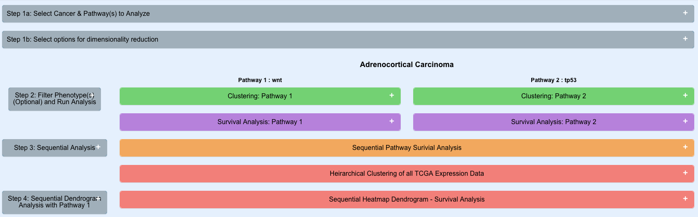
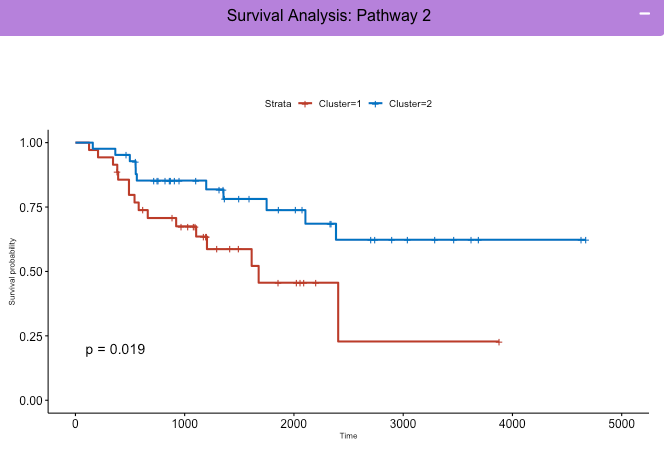
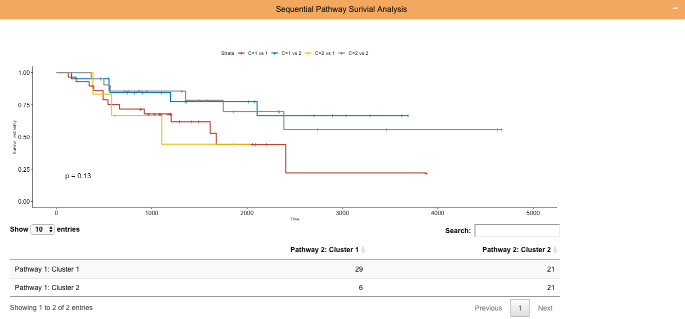
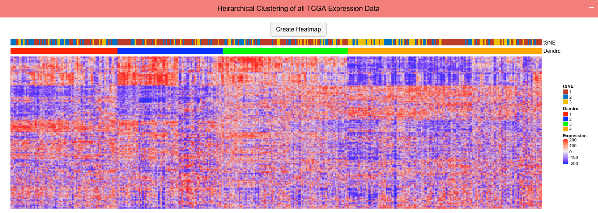
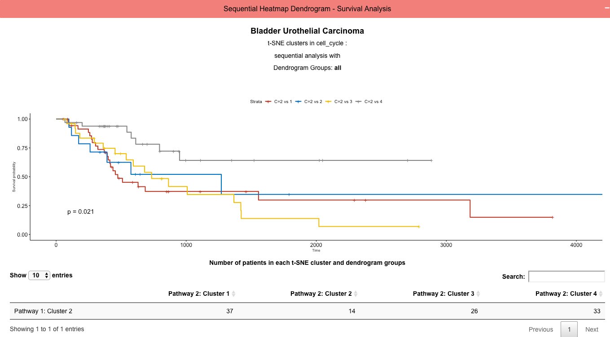

We recently demonstrated that long-term intra-group survival disparities in 30 of 34 human cancer types in TCGA are associated with distinct expression pattern differences of small numbers of functionally related transcripts relevant to cancer signaling, proliferation and metabolism. t-SNE and UMAP, two dimensionality reduction algorithms, are effective in using the RNA expression of these transcripts to cluster patients with more similar pattern of expression closer together. After identifying clusters determined by pattern of expression across a set of genes, kaplan-meyer survival curves can be used to compare the survival of patients in different clusters. We further show that a seqeuntial analysis with the identified clusters provides improved survival differences.
User Input Modules (Grey) and Analytical Modules Displaying Plots (Green, Purple, Orange, Red):
User Input 1: Choose the cancer and 1 or 2 pathways in the anaysis and can further filter patients using up to 3 phenotypic variables.
User Input 2: Choose phenotypes to filter the patients in the analysis. Up to 3 phenotypes can be choosen at one time.
This generates the 3D plots that shows clustering of patients using their RNASeq expression for the genes in the choosen pathway (Green Module).

The clusters of patients in a 3D plot for 1 pathway analysis are compared among each other for survival differences generating kaplan meyer survivial curves for each cluster
User Input 3: The user selects clusters from the analysis of pathway 1 to then split by the patient's clusters from pathway 2 analysis and displayed as kaplan meyer curves see the benefit of a sequential appraoch on survival predictability.
The complete transcritome for patients with the choosen cancer was used to generate a heirarchical clustering of the patients generating a dendrogram and a heatmap to visualize the expression differences.
User Input 4: The user chooses clusters determined in pathway 1 analysis and groups in the dendrogram to split clusters by and generate survival curves comparing the choosen groups. Pathway 2 is not required and not used in this module.
This tab displays a pre-generated t-SNE clustering of patients using the genes in a selected pathway. t-SNE was run using custom settings to achieve sufficent clustering of patients for all combinations of cancers and pathways. Users can select 1 or 2 pathways to view the individual clustering and kaplan meyer plots comparing survival of clusters. The analysis reactively generates with the options selected. After the plots load, users can choose up to 3 phenotypes to filter patients. This will filter patients after t-SNE clustering of all patients and display subsequent plots using only the cluster membership of patients that satisfy the choosen constraints. With 1 pathway loaded, users can preform a sequential analysis with dendogram groups shown in the heatmap. With two pathways loaded, users can preform a sequential analysis with t-SNE clusters from two pathways.
This tab enables users to preform a custom clustering of patients in any of the cancers using the cancer related pathways provided or a custom set of genes. The user can choose whether to use t-SNE or UMAP for the dimensionality reduction step and reactive options for either algorithm are shown to the user. Default values are choosen but users can select their own settings. Prior to running the analysis, users can choose up to 3 phenotypes to filter patients. After running the analysis, the same plots and analysis described in Tab 2 is shown.
shiny
survminer
survival
plotly
ComplexHeatmap
tsne
Rtsne
plotly
shinydashboard
dashboardthemes
dplyr
umap
dbscan
Raghunandan Avula, Jordan Mandel, Edward Prochownik MD PhD
UPMC Children's Hospital of Pittsburgh
Github: https://github.com/RavulaPitt/Sequential-TSNE_RShiny
Contact: raa144@pitt.edu